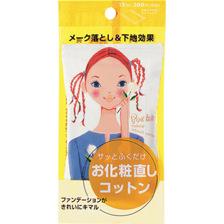

返回列表
产品名称：ポケット お化粧直しコットン

資生堂 ポケット お化粧直しコットン ＿
メーカー 資生堂
JANコード 4901872397822
商品の特徴
サッとふくだけでメークを落として同時に化粧下地効果が得られるお化粧直し用コットン。無香料・無着色。
成分・分量
-
用法及び用量
＜使用方法＞
●フラップ（ふた）を指でつまんで開け、1枚ずつ取り出して顔全体をやさしくふきとるようにしてお使いください。その後、すぐファンデーションがつけられます。